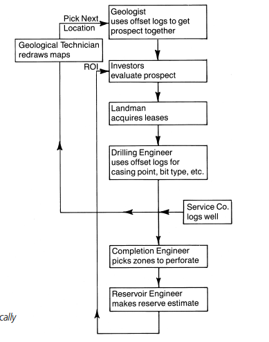

Introduction to Logging
A log is the depth record everyone else argues from. This chapter is the vocabulary: what the word means, why the survey is run after so much money is already spent, and who around a small deal actually uses the print.
Learning goals
- Define a well log and separate the driller’s log, mud log, wireline log, and MWD log.
- State the decision logs are really for: finish the well, or stop before completion cost.
- Match geologist, landman, investor, drilling engineer, completion engineer, and reservoir engineer to the log question each one asks.
Just what are well logs, and how did they get their name?
A well log is a record of the well, plotted against depth more often than against time.
The word is nautical. When kerosene replaced whale oil, sailors who already worked at height moved onto derricks and brought shipboard language with them: rig, mast, doghouse, knowledge box. A captain’s log is a time-ordered diary. The driller’s log uses the same idea, but operators care where they are in the earth, so the entries are written by depth. Early on that diary—cuttings, feet per hour, shows, breakdowns, stuck pipe—was nearly the only subsurface information.
Today “log” means any measurement kept versus depth or time, as a curve or as notes. In ordinary speech it usually means an open-hole wireline survey: tools on a cable, run before casing, recorded from a logging truck. The same family name also covers the driller’s log, the mud log, computer-processed logs, and MWD (measurement while drilling).
Why do we run logs?
Before wireline surveys, a geologist or engineer had the driller’s diary and nearby offset wells, and still had to guess. The old line “the eyes of the oil industry” is the point: logs show the rocks you cannot see.
A survey can speak to tops and thickness, porosity, temperature, lithology (shale, sandstone, limestone, dolomite), oil versus gas, a rough permeability, pressure, dip, minerals, cement bond, and which intervals are flowing. Tools and uses keep changing. The decision underneath them does not.
The job is to tell a good well from a bad one. Good means the well pays back the drill and still leaves a profit. Bad means it does not. By logging time, lease, maybe seismic, and the hole itself are already paid for. Completion is another bill: casing, cement, perforations, tests, tubing, packers, wellhead, facilities. If the logs say the well will not pay, you stop before that bill. If they say it will, they also show where the hydrocarbons are, a first pass at how much (reserves), and whether more than one zone is worth taking.
Who uses logs, and why?
Almost everyone in oil and gas touches a log eventually, especially anyone who decides to drill or to complete. Picture a deal built by an independent—not a company that also refines and markets. It may be a large firm, a small team, or one person, and it still has the same roles.
- The geologist reads seismic, old logs, and offset wells, draws structure, and recommends the prospect.
- The landman takes the leases. They are not log analysts, but they need enough of the story to talk with landowners, bankers, and geologists.
- The moneymen sell working interest: cash in, hoping for profit. Bankers and investors often send their own analysts through the logs. After the hole is drilled the group may split on complete versus plug. If your money is in, you want to follow that argument.
- The drilling engineer uses offset logs to pick mud weight and type, expect the rocks, choose bits, set casing points, and estimate days.
- The completion engineer uses morning reports, the mud log, and open-hole plus cased-hole logs to choose zones, perforate, test, treat, and turn the well on.
- The reservoir engineer takes the first reserves number from open-hole logs, then revises it with production, pressure tests, and later surveys.
Also in the chain: the technician who redrafts maps, the royalty owner comparing wells, the mud salesperson, the accountant putting a value on company assets. A lot of those calls rest on how the log is read. The next chapter is the page itself: header, tracks, inserts, repeat, and calibrations.

Key terms
- Well log
- A record versus depth (or time), as a graph or notes.
- Driller’s log
- Depth diary of cuttings, rate, shows, and trouble.
- Open hole
- Uncased hole, the usual place for the first wireline survey.
- Offset well
- A nearby well used for comparison.
- MWD
- Measurement while drilling, taken as the bit advances.
- Independent
- An operator that is not a fully integrated major.